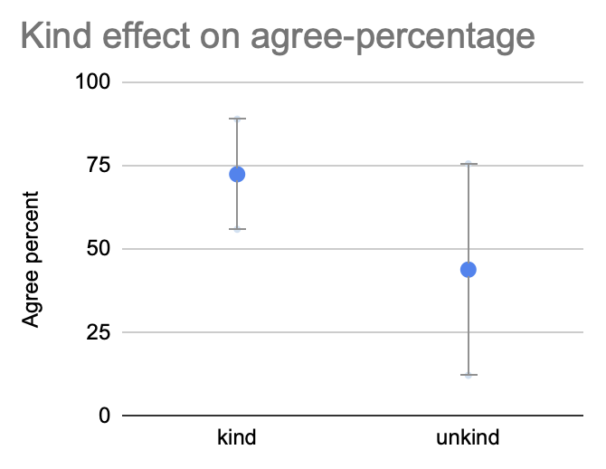

Reason-based-voting increases the advantage of kindness
Short summary
Experiments were done to determine the effect of "reason based voting" on the quality of group decision-making in "request for proposals" surveys.
Users were shown a "good proposal", and a "bad proposal", then asked to dis/agree with each proposal. Some users voted normally, while others were required to view / choose / write reasons for their vote.
Requiring reasons while voting on proposals, increased users' accuracy on objective questions, by about 20%. On subjective questions, reasons increased the advantage of "kind" proposals by about 70%, but did not affect the advantage of "efficient" proposals. The data can support the conclusion that reason-based-voting nudges group decision-making toward greater correctness & kindness.
Theory
Group decision making
Humans' intelligence raised us to the level of apex-predator, and allowed us to occupy every ecosystem on earth. Many other organisms have prospered through prolific reproduction, or biochemical advantages. But for humans, intelligence has been one of the greatest contributors to our expansion & quality of life.
Yet "human progress has been mostly a story of what groups of people - not individuals - have accomplished" (Superminds, Malone, 2018), so our intelligence working in groups matters more than our individual intelligence. Our individual failures of intelligence tend to harm only ourselves, and a few family & friends around us. But our failures of intelligence as communities, organizations, and nations, affect both the members of those groups, and large numbers of other uninvolved people around the world. Collective decisions affect the economic commons, like knowledge systems, transportation systems, nature reserves, the sea, and the sky.
Moreover, group-intelligence can be modified by the communication technology that connects members of the group. For example, in "social media that reward items of information for how far they spread, using algorithms that reinforce people's existing assumptions ... obvious falsehoods... circulate widely..." at a scale that has significantly impacted national politics. Groups' communication technology can affect the degree to which "democratic institutions - parliaments, congresses, and parties - look dumber than the societies they serve." (Big Mind, Mulgan, 2017)
Communication-technology has harmed group-decision quality ‐ demonstrating that communication-technology can change group-decision quality. Now, perhaps we can create communication-technology that alters group-decision quality for the better, to improve people's collective intelligence & quality of life.
Problems
Group decision-making suffers from well-known pitfalls:
- Authority bias: Users with official roles tend to have extra influence.
- Group-think, social influence: Rationality may be compromised to avoid conflict and achieve consensus.
- Group polarization, group shift: Group discussion may push members into more extreme positions, if the member distribution lacks a representative sample of opposing positions to push back. Members converge to the norms of the group, regardless of how abnormal is the sample of group members.
- Information cascades, bandwagon effect: Late-voters may be influenced by early-voters, without verifying the basis for early-voters' choices.
- Shared-information bias: People tend to spend more effort discussing reasons & information that most already knew, rather than considering new information.
- Filter-bubbles: Decision-systems' information-sources may only provide information that agrees with a user's bias.
Because of all these problems, people often prefer distributed decision-making, avoiding the need for group consensus. Yet despite all these problems, people continue to engage in group-decision-making, because group action is powerful.
Approval voting
To overcome these difficulties of group-decision-making, people have designed a variety of voting-methods, which aim to integrate individuals' choices into a choice for the whole group. Methods like "majority rule", "ranked choice", and "liquid democracy", each have shown benefits in some situations.
One of the most reliable voting-methods is "approval voting", used on city & state ballot-propositions, where voters must vote "yes" or "no" to each proposal. Approval-voting has a variety of desirable voting properties, such as Pareto, Condorcet, "monotone", "clone independence"... Additionally, approval-voting can be more cognitively efficient than ranked-choice-voting when the number of options is very large, by automatically disapproving proposals that do not warrant attention.
However, approval-voting has not deterred voters from forming ill-conceived preferences, especially when voters were influenced by heavy marketing from vested interests. Governments have attempted to inform voters' choices on propositions, by supplying voter-guides with reasons "pro" & "con" each proposal. But the government-supplied reasons come from the propositions' polarized supporters / opponents, contain little evidence, and confuse most voters.
Reason based voting
To overcome these problems of making rational approval-voting choices with limited time & effort, we have re-invented a form of crowd-sourcing the best "pro" & "con" arguments for proposals. We use the term "reason based voting" to mean a voting system where voters can input the reason for their vote, and can also read other voters' reasons. Some versions require that the users provide a reason when voting.
In a sense, reason-based-voting is an online, lightweight, highly-structured version of "deliberative democracy" (When the People Speak, Fishkin, 2009). We attempted the difficult "trilemma" combining participation & equality & deliberation, by rigidly structuring the deliberation. There have been a variety of instances of reason-based approval-voting, including: Consider.it, Tricider, Thought Exchange, Regulation Room, Kialo, and more.
Converj created reason-based-voting methods that are similar to these predecesors. But Converj addressed group-decision-making pitfalls, using the following design points:
| Problem | Design solution |
|---|---|
| Group-think |
|
| Group polarization |
|
| Filter-bubbles |
|
| Information cascades |
|
| Social influence |
|
| Authority bias |
|
Experimental method
With versus without reasons
Survey types
Survey topics
Group composition
To start, each group was composed of about 100 Amazon Mechanical Turk workers. However, these participants showed low comprehension of the questions, and low willingness to provide sincere responses. So groups were filtered to use only local workers, in their native language. Then group sizes were reduced to around 50 crowd-workers per experimental group.
To ensure that both without-reasons & with-reasons conditions have comparable user-groups, it would be useful to run surveys both without-reasons and then with-reasons, on the same users. But repeated surveying increases user reflection, so answers to the second survey would show those confounding effects. Randomizing the order of with/out-reason surveys could help, but the reason effect is "sticky", such that having once seen reasons to vote, users cannot forget those reasons while voting in the without-reasons survey. So separate user groups were used for the with/out-reason survey conditions.
Proposals
To ensure that proposals were comparable, the surveys were restricted to only experimenter-generated proposals. In a real request-for-proposals survey, users are allowed to enter any proposals they want, with better proposals being voted to the top of the page, and worse proposals being buried & ignored at the bottom. Each survey contains a different mix of similar user-generated proposals in a variety of phrasings. Therefore the quality of user-generated proposals was difficult to rate or compare objectively between surveys in different experimental conditions. So the experiment only evaluated the performance of identical proposals, supplied by the experimenter, in each survey-condition.
To ensure the visibility of experimenter-generated proposals, only a few proposals were allowed. During a real survey, proposals are introduced at a variety of timings, and the momentary subset of participants in attendance may bury a proposal that most participants would support. The "precision" of top-rated proposals is achieved by down-voting "bad proposals" from the top positions. But the "recall" for "good proposals is not assured, since many good-proposals may be ignored by chance, or by users' incomplete search for proposals they would approve. So we limited proposals to only 1 good-proposal & a few bad-proposals written by the experimenter, so that users in all survey-conditions, saw all proposals. The good-proposals were designed to be true / effective / efficient, and the bad-proposals were designed to be opposite.
The variance between experimental-groups is smaller if the same users populate as many experimental-conditions as possible. Therefore we showed both the good-proposal & bad-proposals to the same experimental-group of users.
Data
Objective question surveys
To experiment with objective-questions, we used the request-for-proposals-survey to ask a multiple-choice-question. The experimenter proposed 1 correct answer, and several incorrect answers. Participants were instructed to agree with 1 proposed-answer, and disagree with the rest.
Though it was possible for a user to approve multiple conflicting answers, nonetheless, survey-results could be measured by the "correct proposal agree share" =
Surveys were run on objective questions about math, logic, and biology facts. The effect of reasons on correct-proposal agree-share was clear, large, with low variance. Requiring reason-based-voting increased agreement with the correct answer by over 20% on average.
Subjective question surveys
Experiments with subjective-questions, asked questions that depended partly on participants' personal values. The experimenter provided "good proposals" and "bad proposals", where good-proposals included effective government policy based on research from economics, sociology, and other sciences.
For each proposal, the "agree percentage" =
Though different proposals received varying engagement and vote-totals, their agree-percentage could still be compared.
One possible effect of reason-based-voting, could be to reduce the agree-percentage for all proposals, both good & bad. Reasoned reflection might cool optimistic agreement. But the data from subjective-surveys showed no significant shift in agree-percentage due to reasons. However, reason-based-voting did show a slight widening of the variance in agree-percentage, perhaps due to reasons solidifying users' opinions.
For each request-for-proposals survey, the "good proposal advantage" =
Different surveys received higher / lower agreement for all proposals, due to varying participant groups in each survey. But a survey's good-proposal-advantage could still be compared to other surveys'.
Disregarding reasons, efficient-proposals showed a noisy but visible agree-percentage-advantage compared to inefficient-proposals. And efficient-proposals appeared to have more consistent agreement, with lower variance.
But reasons did not increase the efficient-proposal-advantage. While participants were more likely to vote for efficient-proposals over inefficient-proposals, reason-based-voting did not make it more likely.
Yet there did appear to be significant voting-pattern shifts when requiring reasons. Since those shifts did not conform to ideals for efficient government policy, perhaps users' reasons were pushing them toward some other values besides efficiency.
One well-established political value, is about "kindness" / "compassion". [1, 2, 3] To examine whether reason-based-voting was affecting participants' values other than efficiency, the experimental proposals were re-categorized as kind / unkind, and then the kind-proposal-advantage was calculated for with-reasons & without-reasons conditions.
Efficient-proposals & kind-proposals both showed nearly equal agree-percentage-advantage, above 25%. Both efficient-proposals & kind-proposals showed lower variance & more consistent agreement compared to inefficient-proposals & unkind-proposals. 
But the kind-proposal advantage over unkind-proposals, increased when reasons were required.
The reason-effect on kind-advantage was almost always positive. On average, reasons raised the kind-advantage by 15 points, a 70% increase.
Sometimes the reason-effect on kind-proposal-advantage was small, though for some topics the effect was much larger.
The reason-effects on kind-proposal-advantage were distributed less like a wide noisy gaussian, more like a positive-skewed gamma.
Conclusions
The data show that reason-based-voting increases the accuracy of group-decision-making for objective issues. And data support the conclusion that on subjective issues, reason-based-voting increases the advantage of kind proposals over unkind proposals. Since making effective group decisions requires a combination of factual correctness & personal values, the objective & subjective advantages of reason-based-voting imply improvements to the quality of group decisions.
The population of quasi-volunteer test-subjects who participate in these experiments, may be somewhat intellectual and predisposed to kindness as a value. Nonetheless, if reason-based-voting helps people to vote more in keeping with their values, no matter what those values are, it appears to be a step forward for democratic representation.
Legislative professionals tend to prefer government policy that efficiently & effectively achieves high quality-of-life. Shifting democratic processes not toward efficiency, but toward more kindness, would be a step in a different yet similar direction.
Reason-based direct-voting could contribute to a balance-of-power with elected representatives who provide expertise & moral-indifference. Many people are concerned that direct-voting may contribute to the disease of populist oppression. But populist oppression already flourishes in many representative democracies. Reasons & kindness may be part of the cure, inoculating direct-voting against majoritarianism.
Future work
Experimental improvements
The experiments described here could be improved in several ways.
The proposals could be re-classified according to various concepts of "good" & "bad" proposals. Then the reason-effect on good-proposal-advantage could be re-calculated, perhaps discovering more significant effects of reason-based-voting on certain concepts of good-proposals.
Additionally, it would be useful to provide multiple experimenter-written proposals at once, and evaluate their rank-ordering using more advanced statistical methods. Having a single experimental user group rank multiple proposals, may provide more noise-tolerance and a clearer signal of reason effects.
How to do your own experiment
You can create a request-for-proposal with additional experimental-options.
- The "done link" option will allow you to direct users who complete the survey, to a following survey or to a mock survey that displays end-of-survey instructions.
- The "hide reasons" option will create a survey that does not require / allow reasons to vote.
Create initial proposals, then freeze them.
- Once you create a request-for-proposals survey, you can add a few proposals yourself, then "block new proposals" to limit users to voting on your proposals.
- Once you have completed running users through the survey, you may "block user input" to preserve the results without further changes.
Here is an example request-for-proposals survey, which blocks new proposals, but allows reason-based-voting on the existing proposals.
The Converj system is free to use, and open-source , so you can create your own instance and modify it. Or, build some of these non-proprietary features into your own existing projects.